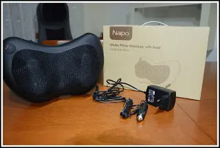
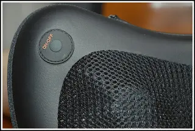
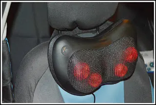
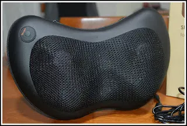
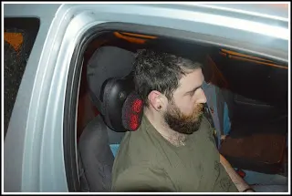

NAIPO - Cuscino per schiena e collo shiatsu
Naipo vuole aiutarci a superare le piccole difficoltà che talvolta diventano davvero fastidiose.
Infatti, con i tempi che corrono e le stagioni che stanno finendo, siamo sempre più soggetti a dolori di vario genere, che sia la schiena, il collo le spalle, gambe. Tutto ciò avviene per gli sbalzi di temperature che ovviamente il tempo ci fa vivere.
Ho avuto il piacere di provare il Cuscino massaggiante per schiena e collo shiatsu.

Un ottimo cuscino per chi ha problemi di cervicale. Basteranno 20 minuti di massaggio e sentirete già sensazioni diverse.

Per utilizzare questo cuscino vi basterà collegare la presa e accendere semplicemente su ON/OFF collocato in alto a sinistra dello stesso.
Noterete che subito inizieranno a ruotare le due sfere che si illumineranno di rosso, faranno una rotazione in contemporanea.

Ogni minuto cambierà rotazione proprio come un vero massaggio shiatsu, per permettere un miglior massaggio rilassante. Oltre al massaggio, vi accorgerete che il cuscino inizierà a riscaldarsi per dare un senso di piacevole leggerezza che contribuirà a migliorare la circolazione del sangue.
Dopo 20 minuti (o quando non ce la farete piu) vi basterà premere per qualche secondo di nuovo il pulsante ON/OFF.
L'unico consiglio che mi sento di dare è, di non fare troppa pressione sulle sfere perchè invece di una sensazione di sollievo potrebbe trasformarsi in un fastidioso dolore.

In conclusione posso dire che è un buon prodotto, lo consiglio caldamente a tutti coloro che hanno fastidi al collo e anche alla schiena. Da poterlo utilizzare sia a casa, che a lavoro ma anche, come vedete nel video e foto, comodamente in macchina. Ovviamente è dotato anche di a fattore per auto.
Acquistandolo dal sito ufficiale potrete godere di una garanzia di ben 2 anni.

Prezzo: 39,95€